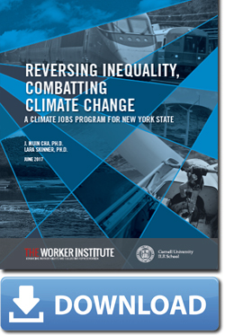

Featured Report: Reversing Inequality, Combating Climate Change

For more information about the full report, the initiative or the Labor Leading on Climate Curriculum, please contact Lara Skinner at lrs95@cornell.edu or 212-340-2884.
Sally Alvarez
- Kirton, G., Healy, G., Alvarez, S., Lieberwitz, R. & Gatta, M. (2010). Women and Union Leadership in the UK and USA: First Findings from a Cross- National Project, London: Queen Mary University of London.
- Whitefield, P., Alvarez, S. & Emrani, Y. (2009). Is there a Women's Way of Organizing? Gender, Unions and Effective Organizing, Ithaca, NY: Cornell University ILR School.
Kate Bronfenbrenner
- Bronfenbrenner, K. & Warren, D. (2011). The empirical case for streamlining the NLRB certification process: The role of date of unfair labor practice occurrence, ISERP Working Paper Series 2011.01.
- Luce, S., & Bronfenbrenner, K. (2007). Capital mobility and job loss: Corporate restructuring, production shifts, and outsourcing (2007), In T. Juravich (Ed.), The future of work in Massachusetts (pp. 53-72). Amherst: University of Massachusetts Press.
- Bronfenbrenner, K. (2005).Organizing women: The nature and process of union organizing efforts among U.S. women workers since the mid-1990s, Work and Occupations, 32(4), pp. 1-23.
Nellie Brown
- Brown, N. J. (2012). Worker Protection at Composting Sites. BioCycle 53(1): 47.
- Brown, N. J. Greener and Safer: Some Potential Choices for Interior Materials for Interior materials for Buildings Undergoing Construction or Renovation (PDF, 656 KB)
- Brown, N. J. (2011) Shift Work and Working Long Hours: Risks and Risk Reduction (PDF, 95 KB), Clearwaters, Winter 2011.
Brown, N. J. (2005). Health and safety guidance for composting in the school setting, Cornell University, ILR School.
Alexander J.S. Colvin
- Colvin, Alexander J.S. 2011. “An Empirical Study of Employment Arbitration: Case Outcomes and Processes.” Journal of Empirical Legal Studies, Vol. 8, No. 1, pp. 1-23.
- Budd, John W., and Alexander J.S. Colvin. 2008. “Improved Metrics for Workplace Dispute Resolution Procedures: Efficiency, Equity, and Voice.” Industrial Relations, Vol. 47, No. 3, pp. 460-479.
- Colvin, Alexander. 2003. “Institutional Pressures, Human Resource Strategies and the Rise of Nonunion Dispute Resolution Procedures.” Industrial and Labor Relations Review, Vol. 56, No. 3, pp. 375-92.
- Katz, Harry C., Thomas A. Kochan and Alexander J.S. Colvin. 2007. An Introduction to Collective Bargaining and Industrial Relations, 4edition. McGraw Hill Irwin.
Lance Compa
- Compa, L. and Feinstein, F. (2012)."Enforcing European Corporate Commitments to Freedom of Association by Legal and Industrial Action in the United States: Enforcement by Industrial Action"33 Comparative Labor Law & Policy Journal 10, Summer 2012
- Compa, L. (2010). A Strange Case: Violations of Workers' Freedom of Association in the United States by European Multinational Corporations,Human Rights Watch.
- Compa, L. (2010). “Legal Protection of Workers’ Human Rights: Regulatory Changes and Challenges in the United States” in Human Rights at Work: Perspectives on Law and Regulation, Colin Fenwick and Tonia Novitz, eds., Hart Publishing, 2010.
Jefferson Cowie
- Cowie, J. "Love Song to the UAW" in Dissent (review of documentary, Brothers on the Line), December 7, 2012.
- Cowie, J. "We Can't Go home Again: Why the New Deal Won't Be Renewed" from New Labor Forum, January 25, 2011.
- Cowie, J. Stayin' Alive: The 1970s and the Last Days of the Working Class (PDF, 3 MB), The New Press, 2010.
- Jefferson Cowie and Joseph Heathcott, "The Meanings of Deindustrialization," introduction to Beyond the Ruins: The Meanings of Deindustrialization (Ithaca: Cornell University Press, 2003).
Ileen A. DeVault
- Forthcoming in Labor History: Family Wages: The roles of wives and mothers in U.S. working-class survival strategies, 1880-1930.
Linda Donahue
- Donahue, L. H., Lamare, J. R., & Kotler, F. B. (2007).The Cost of Worker Misclassification in New York State, Ithaca, NY: Cornell University, 2007.
Eli Friedman
- Friedman, E. (2012). "Getting Throught the Hard Times Together: Chinese Workers and Unions Respong to Economic Crisis (PDF, 237 KB). Journal of Industrial Relations. 54(4): 459-475.
- Friedman E. (2010). "Remaking the World of Chinese Labour: a 30-Year Retrospective." (PDF, 186 KB) With Ching Kwan Lee. British Journal of Industrial Relations. 48(3):507-533.
- Friedman, E. (2009). "External Pressure and Local Mobilizaton:Transnational Activism and the Emergence of the Chinese Labor Movement." (PDF, 131 KB) Mobilization. 14(2):199-218.
Jeff Grabelsky
- Grabelsky, J. (2012). Review of Black Power at Work British Journal of Labor Research, Volume 50, Issue 2, June 2012.
- Grabelsky, J. (2012). "'We're Getting Our Country Back': Reflections on Politics, Race, Labor and Community in The Age of Obama" a Conversation with Mark Ayers, President, Building and Construction Trades Department (AFL-CIO)WUSA_31 in Journal of Labor and Society, December, 2012, Volume 13, Issue 4, pages 545-559.
- Figueroa, M., Grabelsky, J., and Lamare, R. (2011). Community Workforce Provisions in Project Labor Agreements: A Tool for Building Middle-Class Careers (PDF, 1 MB), October 2011.
- Figueroa, M. and Grabelsky, J. (2010). Socio-economic and Fiscal Impacts of Construction Unionization in Massachusetts.
- Miller, J., Grabelsky, J., & Wagner, K. C. (2010). Psychosocial capacity building in New York: Building resiliency with construction workers assigned to Ground Zero after 9/11, Social Groups in Work, 33(1), 23-40.
- Grabelsky, J. and Thompson, P. (2010). Emerald Cities in the Age of Obama: A New Social Compact between Labor and Community, Perspectives on Work, Winter 2010, pp. 15-18.
Lois Gray
- "A Comparative Study of Administrative Practices in American and British Unions" (PDF, 11 MB) (with Paul Clark, Paul Whitehead and Kay Gilbert) Paper in 16th World Congress of the International Labor and Employment Relations Association, July, 2012.
- Do Formal Union Administrative Practices Promote or Hinder Union Revitalization? (PDF, 12 MB) Do Formal Union Administrative Practices Promote or Hinder Union Revitalization? (with Paul Clark and Paul Whitehead) Paper for Conference on "Union Futures International CRIMT, October. 2012.
- "Adapting Internal Administrative Policies and Practices of American Unions to External Challenges: A Longitudinal Study" (PDF, 6 MB) (with Paul Clark and Paul Whitehead), Paper for Labor and Employment Relations Association Summary 2011.
- Empire State's Cultural Capital at Risk?: Assessing Challenges to the Workforce and Educational Infrastructure of Arts and Entertainment in New York, 2009, Lois Gray and Maria Figueroa.
- "Administrative Practices in American Unions. A Longitudinal Study" (with Paul Clark) Journal of Labor Research, July 2007.
- New York's Big Picture: Assessing New York's Position in Film, Television and Commercial Productions (PDF, 5 MB), 2006 (with Susan Christopherson, Maria Figueroa, James Parrott, Damone Richardson, Ned Rightor.
- "Women in Women Leadership” (PDF, 23 MB) (chapter in The American Woman: 2001-2, Editors Cynthia Costello and Anne Stone, New York: W.W. Norton & Co, 2001.
- "Entertainment Unions Tune Up for Troubled Times," New Labor Forum, Fall 2001.
- "The Route to the Top: Female Union Leaders and Union Policy" (PDF, 12 MB) Chapter in Women and Unions, Forging a Partnership, ILR Press, 1996.
- Lois Gray and Ron Seeber, "The Industry and Unions: An Overview" (PDF, 13 MB), Chapter in Under the Stars: Essays on Labor Relations in Arts and Entertainment, editors Lois Gray and Ron Seeber, ILR Press, 1996.
Kati L. Griffith
- Griffith, Kati L., Undocumented Workers: Crossing the Borders of Immigration and Workplace Law (May 14, 2012). Cornell Journal of Law and Public Policy, Vol. 21, p. 611, 2012.
- Griffith, Kati L. and Lee, Tamara, Immigration Advocacy as Labor Advocacy (May 18, 2012). Berkeley Journal of Employment and Labor Law, Vol. 33, No. 1, p. 73, 2012.
- Griffith, Kati L., Discovering 'Immployment' Law: The Constitutionality of Subfederal Immigration Regulation at Work (May 26, 2011). Yale Law & Policy Review, Vol. 29, p. 389, 2011.
James A. Gross
- Gross, J. (2012). "The Human Rights Movement at U.S. Workplaces: Challenges and Changes," 65 Industrial and Labor Relations Review 1: January 2012, 3-16.
- Gross, J. (2010). A Shameful Business: The Case for Human Rights in the American Workplace. Ithaca: Cornell University Press, 2010.
- Gross, J. and Compa, L. (2009). Human Rights in Labor and Employment Relations: International and Domestic Perspectives, Urbana-Champaign, Labor and Employment Relations Association.
- Gross, J. (2004). "Incorporating Human Rights Principles into U.S. Arbitration: A Proposal for Fundamental Change" (PDF, 158 KB), 8 Employee Rights and Employment Policy Journal, 2004, pp. 1-51.
- Workers' Rights as Human Rights, ed. Gross, J. Ithaca: Cornell University Press, 2003.
Louis Hyman
- Hyman, L. (2012). Borrow: The American Way of Debt, Random House, New York: Vintage Books, January 2012.
- Hyman, L. (2011). How the Surge in Consumer Lending Has Squeezed Small Businesses Dry, National Journal, October 14, 2011.
Harry Katz
- Katz, H. C., Kochan, T., and Colvin, A. (2009), An Introduction to Collective Bargaining and Industrial Relations, New York: McGraw Hill --Irwin Inc., 2009 (4th edition)
- Harry Katz, Rosemary Batt, and Jeffrey Keefe "The Revitalization of the CWA: Integrating Collective Bargaining, Political Action, and Organizing" Faculty Publications - Human Resource Studies (2003).
- Rekindling the Movement, Richard Hurd, Harry Katz, Lowell Turner eds., Ithaca, NY: Cornell University and ILR Press, 2001.
Peter Lazes
- Lazes, P., Katz, L. and Figueroa, M. (2012).How Labor-Management Partnerships Improve Patient Care, Cost Control and Labor Relations (PDF, 2 MB), February 28, 2012.
- Lazes, P., Katz, L., Figueroa, M. and Karpur, A. (2012). Organizing for Sustainable Effectiveness, Chapter 5: Using Adaptive and Disruptive Change Strategies to Create an Integrated Delivery System: Montefiore Medical Center's Experience, August 2012.
- Lazes, P. and Savage, J., New Unionism and the Workplace of the Future, Unions and Workplace Reorganization by Bruce Nissen, Wayne State University Press, Detroit, 1997.
Beth Livingston
- Livingston, B. A. (in press). Bargaining behind the scenes: Spousal negotiation, labor and work-family burnout Journal of Management. (Published online 21 December 2011.)
- Judge, T. A., Livingston, B. A., & Hurst, C. (in press). Do nice guys—and gals—really finish last? The joint effects of sex and agreeableness on earnings. Journal of Personality and Social Psychology.
- Kammeyer-Mueller, J. D., Livingston, B. A., & Liao, H (2011). Perceived similarity, proactive adjustment, and organizational socialization. Journal of Vocational Behavior, 78, 225-236.
- Judge, T. A., & Livingston, B. A. (2008). Is the gap more than gender? A longitudinal analysis of gender, gender role orientation, and income. Journal of Applied Psychology, 93, 994-1012.
- Livingston, B. A., & Judge, T. A. (2008). Emotional responses to work-family conflict: An examination of gender role orientation among working women. Journal of Applied Psychology, 93, 207-216.
Ken Margolies
- Margolies, K. (2012), Managing Union Management, New Unionism (online), June 6, 2012.
- Margolies, K. (2011). Human resource strategy for labor unions: Oxymoron, chimera or contributor to revival
- Fontes, M., & Margolies, K. (2010). Youth and unions.
Veronica Martinez-Matsuda
- Martinez-Matsuda, V.Building Migrant Citizenship: Race, Rights, and Reform in the U.S. Farm Labor Camp Program, 1935-1947 -book manuscript in progress
- Martinez-Matsuda, V. (2013)."'A Transformation for Migrants': Ethnic Mexican Farm Workers, the Federal Government, and Health Reform During the New Deal Era," in Making Race, Making Health: Historical Approaches to Race, Health and Medicine, The University of Minnesota Press, 2013 – forthcoming
- >Martinez-Matsuda, V. (2013)."Agriculture, Race, Transnational Labor, and the American South," in The New Encyclopedia of Southern Culture, V. 24 Race, eds. Thomas C. Holt and Laurie Green, University of Mississippi, Center for the Study of Southern Culture, The University of North Carolina Press, 2013 – forthcoming
- Martinez-Matsuda, V. (2009). Making the Modern Migrant: Work, Community, and Struggle in the Federal Migratory Labor Camp Program, 1935-1947, Austin: University of Texas, 2009.
Lara Skinner
- Skinner, L., Sweeney, S. Goodman, I., and Rowan, B. (2012),Pipe Dreams? Jobs Gained, Jobs Lost by the Construction of Keystone XL (PDF, 1 MB).
- Skinner, L. (2011).Labor's Route to a New Transportation System: How Federal Transportation Policy Can Create Good Jobs, First Rate Mobility and Environmentally Sustainable Communities (PDF, 1 MB).
Sean Sweeney
- Sweeney, S. (2012). Earth to Labor: Why Economic Growth is No Solution, New Labor Forum.
- Skinner, L., Sweeney, S. Goodman, I., and Rowan, B. (2012).Pipe Dreams? Jobs Gained, Jobs Lost by the Construction of Keystone XL (PDF, 1 MB).
- Sweeney, S. (2011). The Durban Challenge: How Unions Can Help Secure a Binding Global Climate Agreement in 2011, Labor Network for Sustainability (online).
Maite Tapia
- Tapia, M., Marching to Different Tunes: Commitment and Culture as Mobilizing Mechanisms of Trade Unions and Community Organizations, British Journal of Industrial Relations, Blackwell Publishing Ltd/London School of Economics 2012.
Lowell Turner
- Turner, L., Adler, L., and Tapia, M., (2013) Mobilizing Against Inequity: Unions, Immigrant Workers, and the Crisis of Capitalism (forthcoming).
- Lowell Turner, "States' Gains, Labor's Losses: China, France, and Mexico Choose Global Liaisons, 1980–2000." ILRReview 63.4 (2012).
- Lowell Turner, "A Future for the Labor Movement?" In G. Gall, R. Hurd, and A. Wilkinson (eds.). International Handbook on Labour Unions: Responses to Neo-Liberalism. Cheltenham, U.K.: Edward Elgar, 2011, 311-327.
- Lowell Turner,Mobilizing Against Inequality: Unions, Immigrant Workers, and the Crisis of Capitalism (PDF, 367 KB), The 35th Countess Markievicz Memorial Lecture, Irish Association for Industrial Relations, National College of Ireland, Dublin, November 22, 2011
- Lowell Turner, "Institutions and Activism: Crisis and Opportunity for a German Labor Movement in Decline." Industrial and Labor Relations Review 62:3, April 2009. (This article won the James G. Scoville Best International/Comparative Paper Award Labor and Employment Relations Association, 2010.)
KC Wagner
- Wagner, K and Livingston, B.A.,The Experience of Being Targets of Street Harassment in NYC: Preliminary Findings from a Qualitative Study of a Sample of 223 Voices who Hollaback! (PDF, 1 MB), 2012.
- Livingston, B.A., Wagner, K and Diaz S.T.When Street Harassment Comes Indoors: A Sample of New York City Service Agency and Union Responses to Street Harassment (PDF, 637 KB), 2012
- Miller, J., Grabelsky, J., & Wagner, K (2010). Psychosocial capacity building in New York: Building resiliency with construction workers assigned to Ground Zero after 9/11, Social Groups in Work, 33(1), 23-40.
- Wagner, K.Impact Brief One: Affordable and Secure Child Care Contributes to a More Productive Workforce & Helps Resolve Work-Family Conflict (PDF, 268 KB), 2010.
- Wagner, K.Impact Brief Two: Workplace Partnerships and Interventions Promote Dialogue on Child CareTopic: Work-life; Women Workers (PDF, 202 KB), 2010.
- Wagner, K.Impact Brief Three: Child Care Workshops Provide Benefits to Employees and Employers Topic: Work-life; Women Workers (PDF, 219 KB), 2010.
- Wagner, K., King, D., Dolan, M., and Mazurkiewicz, J.Working Parents for a Working New York (PDF, 4 MB), District Council 37/AFSCME, 2010.
Art Wheaton
- Wheaton, A.Reflections on a Changing China, Inside China, Business and Economy (PDF, 392 KB), A Cornell-IIPM Think Tank-B&E Joint Study, May 2012, pp 8-14.